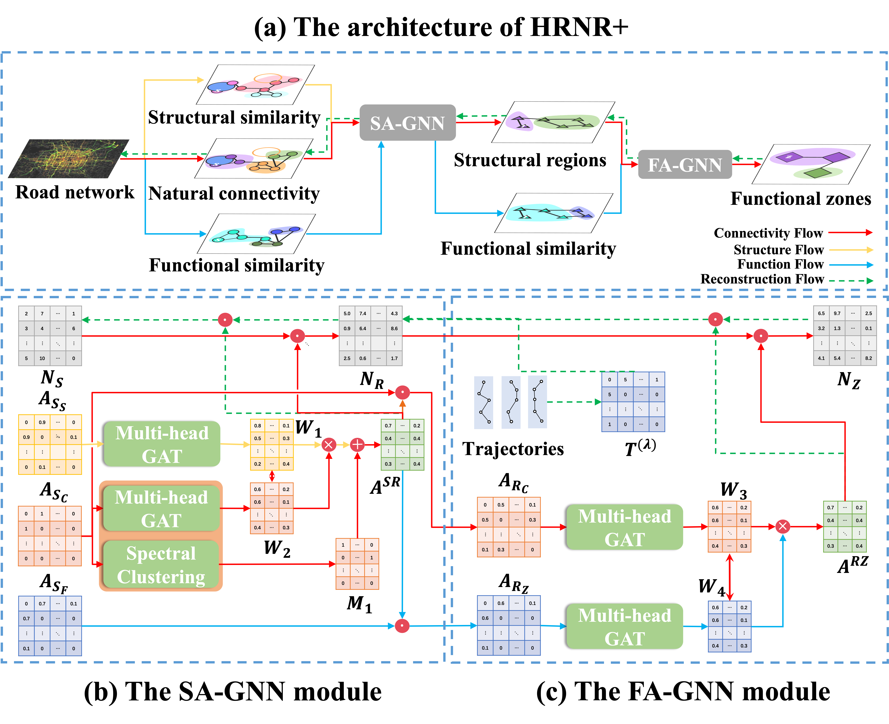
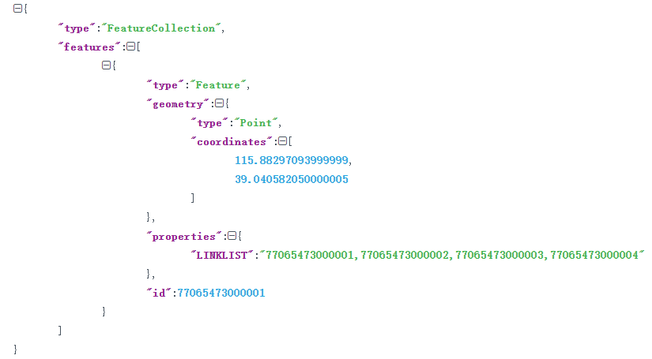
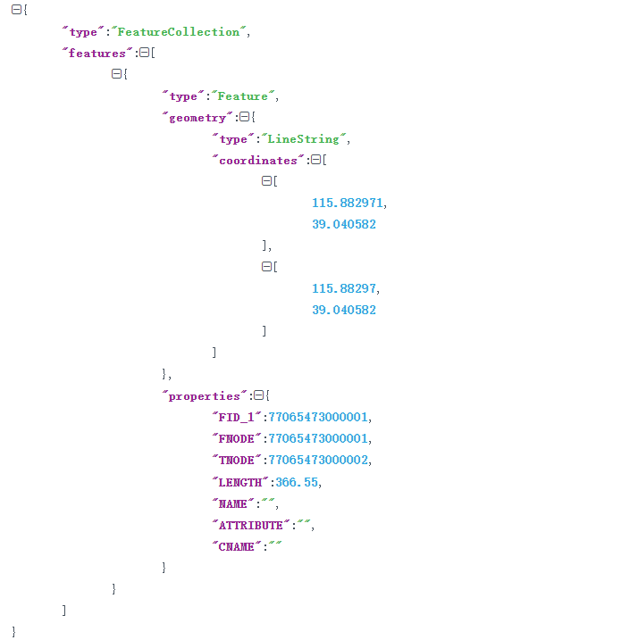

城市体征构建与认知系统
体征介绍
体征在医学上通常被用来描述人体具有诊断意义的指标，反映人体的运行状态和健康程度，如生命体征，包括体温、脉搏、呼吸等。而城市是一个更加复杂的巨型“生命体”，类比于人体体征，城市体征指的是反映复杂城市系统运行状态的指标，如交通体征，包括通行流量、通行速度等；环境体征，包括气温、湿度、空气质量等。 城市体征往往是由城市大数据反馈得到。城市大数据是指在城市运转过程中产生或获得的数据，以及与信息采集、处理、利用、交流能力有关的活动要素构成的有机系统。城市数据一般可以分为静态和动态两种类型，静态数据多是城市短期内基本维持不变的低频数据，如路网、建筑等；动态数据则指的是城市中高频变化的数据，如交通流量、人口密度、空气质量等。
如何利用海量数据挖掘、建立城市体征是一个长期以来一直在探索的问题。起初只是利用一些统计信息来刻画城市在某一领域的状态，这些统计信息只能从宏观角度给予城市个别描述，无法深入挖掘城市数据内部规律，建立不同指标之间的内在联系。后来，基于传统机器学习的数据特征学习算法被广泛提出，研究人员需要利用手动特征工程等技术从原始数据的领域知识出发建立城市特征，然后再部署相关的机器学习算法。虽然手动特征工程对于应用机器学习算法效果不错，但它同时也非常昂贵和耗时，并且依赖于强大的专业知识。随着深度学习的发展，表示学习开始被用于建立城市深度特征，它通过将实体或关系数据投影到低维向量空间，能够实现对实体和关系的语义信息的表示，从而高效地计算实体、关系及其之间的复杂语义关联。与显式体征相比，表示学习所得到的隐式体征更能够捕捉实体之间的关联性，更能有效描述城市这一复杂系统的动态变化；与特征工程相比，表示学习所得到的深度特征是从数据中自动抽取学习得到的，消除了对专业知识的依赖，并且得到的体征表现性能更强。
因此，本系统利用表征学习方法将蕴藏在海量城市大数据中的知识抽象为高阶特征，并在下游三个场景任务中，即群体交通场景、个体交通场景和突发事故场景，提供有效指导，从而实现对城市运行管理和决策的辅助与建议。
系统框架图

模型介绍
本模型核心思想是建立分级图神经网络，对不同层次的路网体征进行建模。特别地，我们希望通过细粒度的路段聚合，获得高层次的交通单元。为此，我们引入了两种虚拟节点，即结构区和功能区。结构区域主要用来体征空间连通的路段，起到一定的交通作用，如立交桥、十字路口等。此外，在结构区域之上形成功能区，为出行人群提供某种功能，如购物区。除此之外，我们采用了多图机制来引导虚拟节点与现实世界的结构区域和功能区域相对应。除了道路网络的自然连通性外，我们利用道路类型属性建立结构相似性，利用城市POI信息定义道路段之间的功能相似性。使用这样的分级图神经网络，我们可以缓解与远程节点依赖相关的问题。
基本概念介绍
- 路段：路网中的基础单元，通常与一些特征（如经纬度、路段类型、路段长度，车道数）相关联。
- 结构区：由一组路段集合组成，通常作为一个整体起到一定的交通作用，如立交桥、十字路口等。
- 功能区：由多个结构区组成，提供满足人们某些活动的交通功能，如购物区，住宅区等。
模型框架图

数据介绍
表征模型输入
- 路网数据：包含节点数据和边数据。
- 节点数据：包含节点序号、节点坐标和节点属性，格式为： 
- 边数据：包含边序号，边长度，起始节点，终止节点，经过节点坐标和边属性，格式为： 
- 车辆轨迹数据：将轨迹经纬度映射到路网上，得到节点序列，如[1, 2, 3]表示车辆从节点1经过节点2到达节点3。
- POI数据：包含经纬度和POI种类。
表征模型输出
- 路段到结构区的分配矩阵：包含每条路段属于每个结构区的概率值。
- 结构区到功能区的分配矩阵：包含每个结构区属于每个功能区的概率值。
- 路段表征矩阵：包含每条路段的特征。